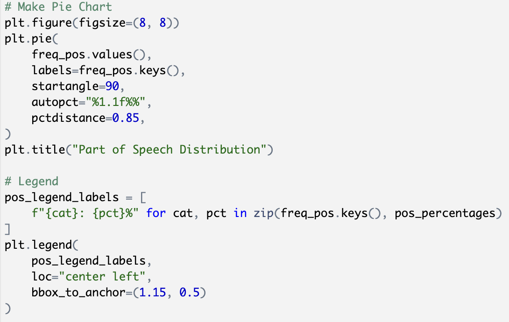
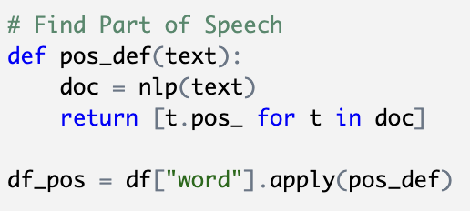

Introduction
Alice's Restaurant Massacree by Arlo Guthrie
- An 18 minute, ~2630 word, talking blues song telling the story of when folk singer Alro Guthrie was arrested for littering on Thanksgiving day in 1965 (which gave him a criminal record, disqualifying him from the draft).
- Also a 'satirical anthem against bureaucracy and the Vietnam War' (Alice's Resturant Anti Massacree Movement).
- Sung word for word at every thanksgiving dinner in my family.
- I went through and hand typed every lyric because none of the lyrics I found online were accurate enough.
- I also had to add in all the examples of g-dropping and shortened "and's."
- I only used the first verse in my analysis so I didn't have to work with too much data.
- Things I found most interesting about the song:
- — The non-standard pronunciation of words like 'massacree' or 'restaurant.'
- — The repetition of words and phrases like 'twenty-seven eight-by-ten colored glossy photographs with circles and arrows An’ a paragraph on the back of each one explainin’ what each one was to be used as evidence against us.'
- — How each repetition of a word or phrase changes each time it's repeated.
- — How it being a spoken song telling a story influences part of speech in comparison to other non-spoken story songs.
A linguistic anaylsis of the song Alice's Resturant Massacree
- Goal: too see what linguistically interesting aspects of the song I can find.
- Was most interested in Alro's characteristic pronunciation of words and the repetition of words and phrases.
- I looked most at part of speech and it's distribution.
- Also looked at WuPalmer scores because of all the repeated words and phrases in the song.
- Looked a bit a word length and the amount of vowels in each word in component 2.
Methodology
Alice's Restaurant Massacree by Arlo Guthrie
- An 18 minute, ~2630 word, talking blues song telling the story of when folk singer Alro Guthrie was arrested for littering on Thanksgiving day in 1965 (which gave him a criminal record, disqualifying him from the draft).
- Also a 'satirical anthem against bureaucracy and the Vietnam War' (Alice's Resturant Anti Massacree Movement).
- Sung word for word at every thanksgiving dinner in my family.
- I went through and hand typed every lyric because none of the lyrics I found online were accurate enough.
- I also had to add in all the examples of g-dropping and shortened "and's."
- I only used the first verse in my analysis so I didn't have to work with too much data.
- Things I found most interesting about the song:
- — The non-standard pronunciation of words like 'massacree' or 'restaurant.'
- — The repetition of words and phrases like 'twenty-seven eight-by-ten colored glossy photographs with circles and arrows An’ a paragraph on the back of each one explainin’ what each one was to be used as evidence against us.'
- — How each repetition of a word or phrase changes each time it's repeated.
- — How it being a spoken song telling a story influences part of speech in comparison to other non-spoken story songs.
Methods
Pie Charts and Plotly Interactive Scatter Plots
- My first pie chart originally had a couple extra categories called 'Verb Verb' or 'X' (I don't know what types of words were in them).
- I had to figure out how to take those sections out becuase they were making the pie chart hard to read and I didn't feel like I needed them.
- It was also a lot of work to get the key in and to the side of the pie chart
- — Some of the code for that:

- The Plotly interactive scatter plots were really cool but hard to put into my website, and it took even longer to make them look pretty (My CSS is reeeeeally long).
Function to find Part of Speech
- I had to use a function to find part of speech (POS) for my pos distribution
- POS function code:

- What it does:
- — Looks at the text (song lyrics)
- — nlp's that text and defines it as 'doc'
- — returns the part of speech for each word
- — Looks at the 'word' column of my DataFrame from component 2 and applies the function to each word and then puts them in another DataFrame called 'df_pos'
*Big shout out to Kendal for all those late nights at the library working on this project and other assignments for this class, thank you! :)*
Going Forward
What I would change/add if I continued this analysis:
- Compare part of speech distribution with more than just one other song, it would be cool to see what different genres looked like comparatively.
- Change the way I cleaned my data and the way I analysed WuPalmer scores to get better, easier to understand results.
- I would love to get an IPA transcription of the song and compare his pronunciation of certain words (like "restruant" and "massacree") to standard pronunciations of those same words.
- Look at the second verse??